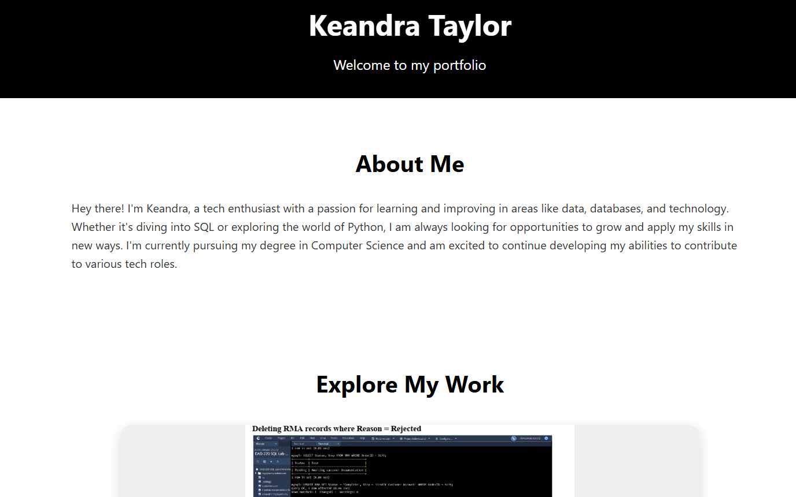

Personal Portfolio Website
This is my personal portfolio website, where I showcase the projects I've worked on, including data analysis reports, database management, and more. Currently, the site highlights three main projects: my RMA analysis report, database creation and querying project, and this very portfolio itself. The website is still a work in progress and will continue to be updated with new projects and improvements as I gain more experience and expand my skill set. It's designed to demonstrate my abilities in web development, data analysis, and database management, while offering a clean and user-friendly interface to explore my work.
RMA Analysis Report

In this project, I analyzed the RMA (Return Merchandise Authorization) data to identify trends and insights. The report focuses on return reasons, geographical patterns, and specific product models that were returned most frequently. Using data from multiple sources, I highlighted the top reasons for returns, including defective and incorrect products, as well as the states with the highest return rates. The insights help inform product quality improvements and better customer service strategies.
View RMA ReportCustom Database Build

In this project, I designed and built a relational database to manage product and return data. I created multiple tables, populated them with data, and wrote SQL queries to extract meaningful information from the database. This project demonstrates my ability to manage data efficiently, create normalized tables, and perform queries to derive insights, such as identifying the most returned products and the frequency of product returns across different regions.
View Database Build